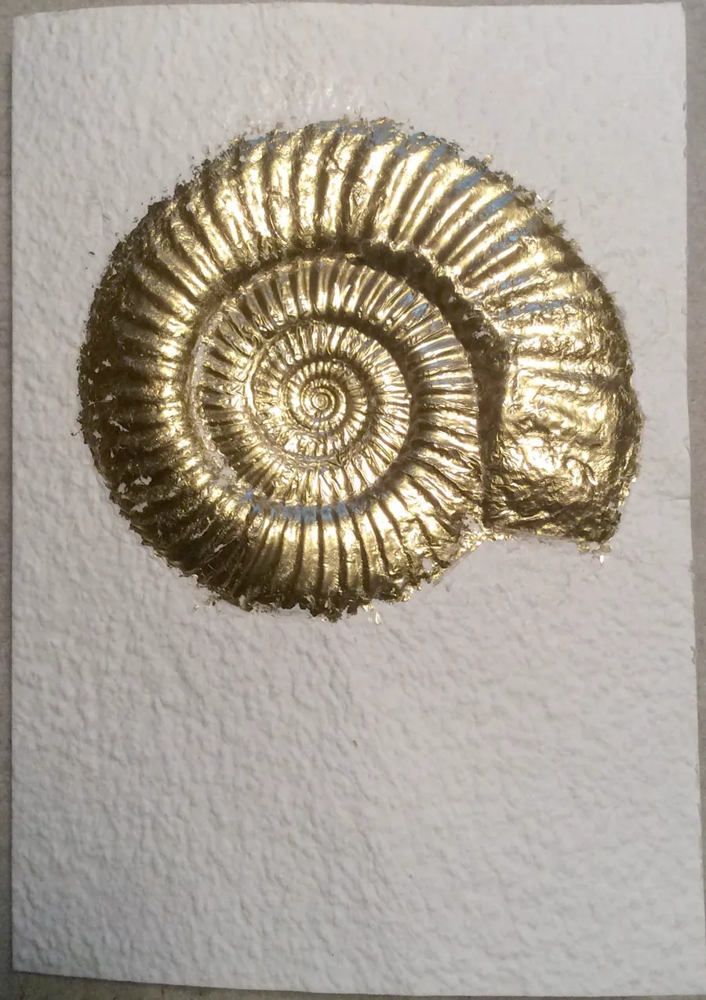
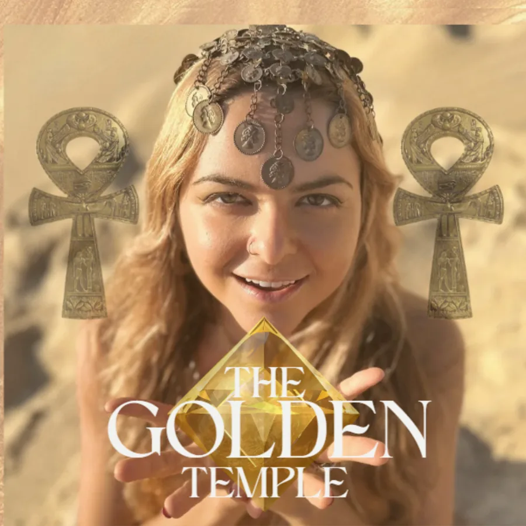
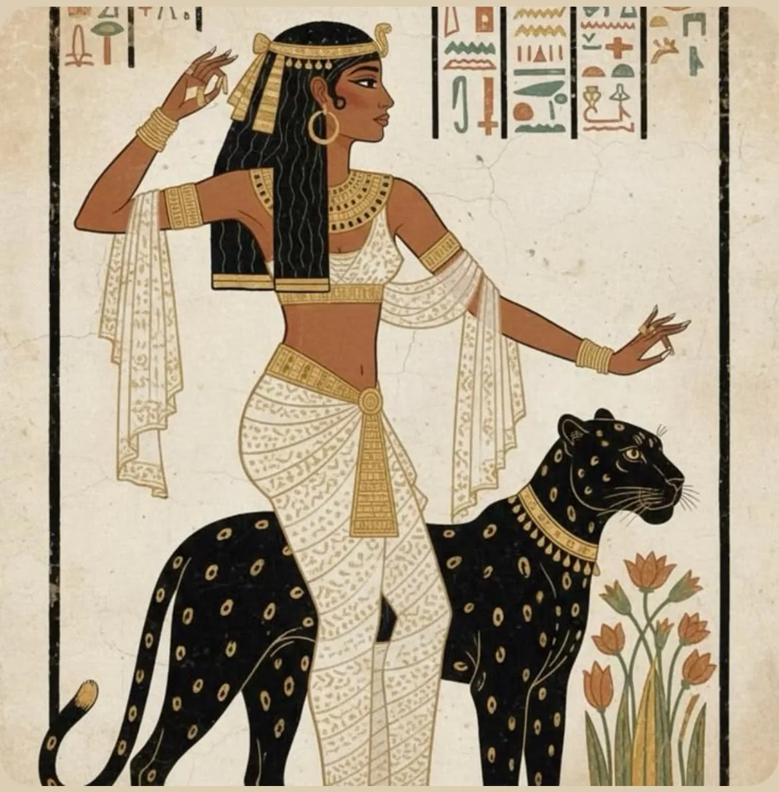

Mentoria em grupo 12 encontros
Uma iniciação para transformar consciência em presença vivida.
Viva a partir do poder que nasce no teu ventre.
O Templo Dourado é uma jornada para mulheres que atravessam uma mudança e desejam voltar a reconhecer limites, expressar a própria voz e sustentar a vida a partir de dentro.
Conheça primeiro a jornada completa e o que sustenta cada passagem.

em grupo
Do portal à morada
A travessia já começou
Talvez você já tenha mudado por fora.
Um relacionamento terminou. O trabalho que servia já não serve. A cidade, a rotina ou o lugar que você ocupava perderam a medida.
Mesmo assim, uma parte sua ainda espera um sinal de fora para confiar no que já sabe por dentro.
Quando esse intervalo se alonga, não falta sensibilidade. Falta chão para sustentar a própria voz.

O ponto de reconhecimento
Você sente muito. E já aprendeu a compreender muito do que sente.
Leituras, terapias, retiros e práticas abriram caminhos reais. A passagem que se apresenta agora pede integração: levar o que você já sabe para os limites que coloca, para a voz que expressa e para as escolhas que sustenta todos os dias.
“Você não está quebrada. Apenas esquecida de si.”
Prana Ka

A Iniciação Dourada
Um caminho de retorno ao poder que nasce no ventre.
Chamo de Poder Distorcido o hábito de entregar para fora a medida do próprio valor, da própria voz e do próprio desejo. A Iniciação Dourada devolve essa medida ao corpo por meio do Método S.E.R.
-
01
Aterrar
Escutar o corpo e criar presença suficiente para permanecer consigo.
-
02
Compreender
Dar nome aos padrões que atravessam escolhas, vínculos e expressão.
-
03
Alquimizar
Atravessar o que perdeu função e abrir espaço para uma resposta mais inteira.
-
04
Ressoar
Dar som, gesto, arte e linguagem ao que antes vivia sem expressão.
-
05
Corporificar
Levar a experiência para a rotina, os limites, os vínculos e as decisões.

A jornada completa
Quatro fases para fazer do portal uma morada.
Cada fase prepara a seguinte. O ritmo respeita a profundidade do processo e mantém a experiência ligada à vida real.
-
01
Ver
Tomada de consciência
Reconhecer o chão atual, os padrões em curso e o chamado da travessia.
-
02
Atravessar
Transmutação e alquimia
Passar pelos oito Portais do Ventre e transformar percepção em experiência encarnada.
-
03
Renascer
Renascer crístico
Reorganizar presença, escolha e expressão a partir do que foi integrado.
-
04
Habitar
Reinar e celebrar
Sustentar a própria vida com mais verdade, devoção e autoria.
O que sustenta o percurso
Profundidade com estrutura para integrar.
- 12
- encontros em grupo para transmissão, prática e integração
- Presença
- meditações guiadas e transmissões ao longo da jornada
- Corpo
- rituais femininos e práticas para levar a experiência à vida
- Biblioteca
- aulas e práticas de cerca de 20 minutos para revisitar no seu ritmo
- Individual
- uma sessão de Mesa Radiônica para cada participante

Prana Ka • The Golden Temple
Quem conduz a passagem
Prana Ka, doula de passagem.
“Eu guio não porque sei tudo, mas porque vivo tudo.”
Psicanalista, psicoterapeuta, artista, compositora e sacerdotisa do ventre, Prana reúne escuta, psicologia, ritual e expressão artística em um trabalho que acompanha mulheres em travessias.
Desde 2021, a versão individual desta jornada vem sendo vivida e refinada. A mentoria em grupo leva esse percurso para um campo de presença compartilhada, preservando a responsabilidade de cada mulher sobre a própria passagem.
O Templo Dourado é uma experiência educativa e vivencial. Não substitui psicoterapia, acompanhamento médico ou atendimento de emergência.

A dedicação é o filtro
Há um momento em que reconhecer o chamado também significa escolher o caminho.
Esta jornada conversa com você se
- você vive uma travessia e a antiga forma de se conduzir perdeu sentido
- já percorreu caminhos de autoconhecimento e deseja integrar o que sabe no corpo
- aceita dedicar presença às práticas e ao espaço entre os encontros
- quer reconhecer limites, expressar sua voz e sustentar escolhas próprias
Talvez ainda não seja a hora se
- você procura uma solução que não peça participação ativa
- quer que outra pessoa determine quem você deve ser ou como deve viver
- precisa agora de cuidado clínico individual ou suporte de emergência
A turma é um espaço para mulheres dispostas a atravessar com presença, respeito e responsabilidade.

O Templo Dourado
O que você sela ao entrar.
Uma mentoria em grupo de 12 encontros para transformar percepção em presença, expressão e escolhas sustentadas na vida.
Sua entrada inclui
- os cinco passos do Método S.E.R.
- as quatro fases e os oito Portais do Ventre
- transmissões, meditações e rituais femininos
- biblioteca de aulas e práticas breves
- uma sessão individual de Mesa Radiônica
Próxima turma em preparação
Preço, calendário, capacidade, prazo e política de cancelamento serão publicados juntos, depois de confirmados.
A entrada é por conversa
Antes de você entrar, nós conversamos. Não é uma triagem — é o modo como esse caminho começa: eu preciso sentir o seu campo, e você precisa sentir o meu.
- Início
- Encontros
- Turma
- Inscrições
A entrada será aberta quando os termos da próxima travessia estiverem confirmados.
Depois da conversa
Política de cancelamento
Perguntas antes da passagem
Clareza também é parte do cuidado.
Eu já faço terapia. O que esta jornada acrescenta?
A mentoria reúne reflexão psicológica, práticas corporais, ritual e expressão artística em um percurso de integração. Ela pode caminhar ao lado da terapia, mas não ocupa o lugar do cuidado clínico.
Preciso ter experiência com práticas espirituais?
Não. Você precisa de abertura, discernimento e disposição para experimentar. Toda prática será apresentada dentro do contexto da jornada, sem exigir uma formação anterior.
Como funcionam os 12 encontros?
São 12 encontros em grupo que combinam transmissão, prática e integração. O calendário e a cadência completos serão apresentados antes da abertura do checkout.
Quanto tempo as práticas pedem?
A biblioteca inclui aulas e práticas de cerca de 20 minutos. A dedicação entre encontros importa mais do que uma performance de constância perfeita.
E se eu sentir medo de tocar em algo profundo?
Medo pode fazer parte de uma travessia. Aqui, profundidade caminha com respeito aos limites e com responsabilidade. Quando houver necessidade de cuidado clínico, a orientação é buscar o suporte profissional adequado.
Quando minha entrada está realmente selada?
Quando as inscrições estiverem abertas, sua entrada será confirmada após a aprovação do pagamento no checkout. O próximo passo chegará pelo canal informado na própria oferta.
Do portal à morada
O poder que nasce no teu ventre pede espaço para virar vida.
Se este é o seu tempo, atravesse com presença. O Templo começa a ser habitado na escolha que você sustenta por dentro.
Quero conversar sobre minha entrada